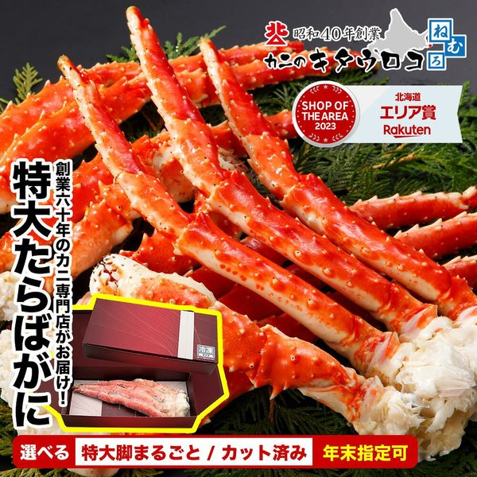
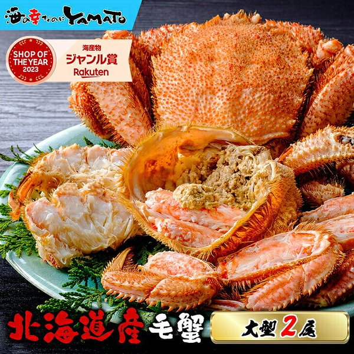
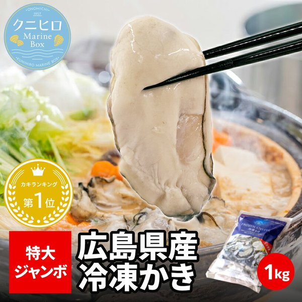
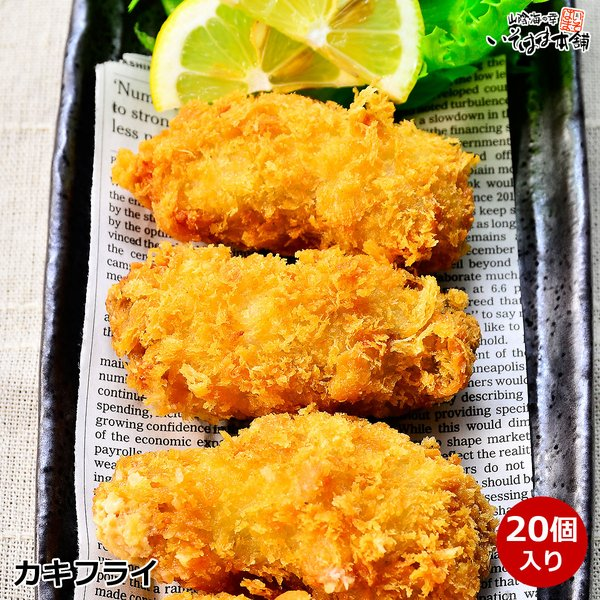
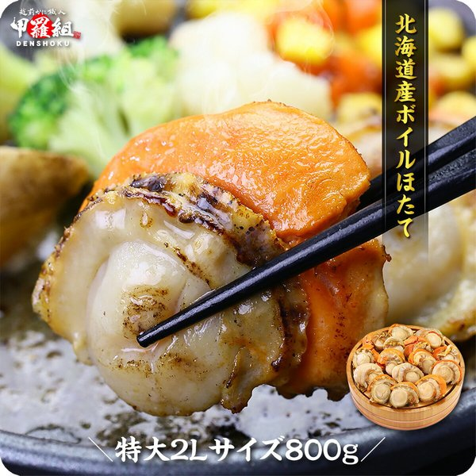
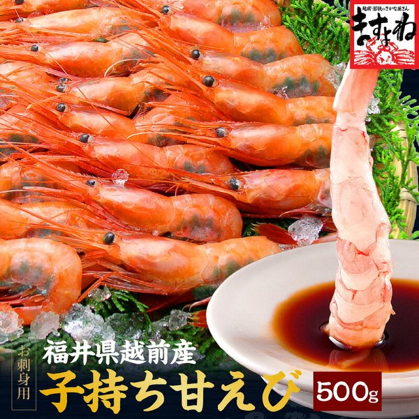
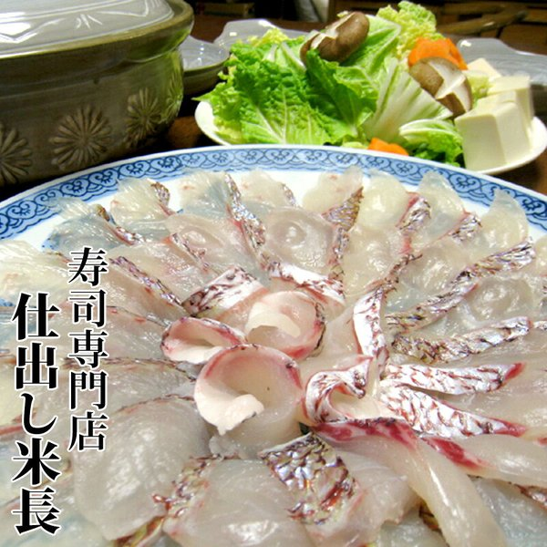
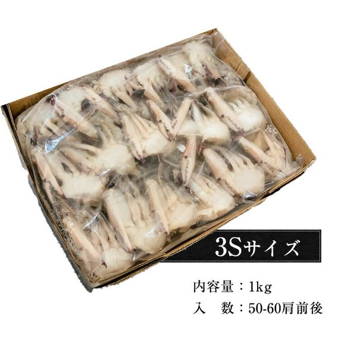

【2026年冬】年末年始のごちそうお取り寄せ｜ズワイガニ・タラバガニ・毛蟹・牡蠣・いくら・海鮮しゃぶしゃぶ10選
年末年始のごちそうは、買い出しに出る時間がもったいない。カニや牡蠣、いくらをお取り寄せにすると、届いた箱を冷凍庫に入れておくだけで、大晦日と元日の食卓がほぼ完成します。
選ぶ軸は、殻むきの手間、人数に合う量、そして解凍にどれだけ時間をかけられるかです。カット済みのポーションや脚だけのタラバガニなら、食卓に出るまでの作業は解凍だけ。牡蠣はバラ凍結の冷凍かきなら必要な分だけ使え、カキフライにすれば揚げるだけで一品になります。いくらと甘えびは解凍してそのまま盛れるので、人が集まる日の朝に助かります。しゃぶしゃぶ用の鯛とほたては、鍋を囲む年の瀬の食卓に向いています。カニは「kg」、牡蠣は「粒」、いくらは「g」と、店ごとに量の見せ方が違うので、1人前あたりに直して比べるのが失敗しないコツです。
本記事では、楽天市場で人気・高評価の冬のカニ・海鮮お取り寄せ10選を、実売価格とレビュー評価つきで写真付き紹介します。
- おすすめ10選 スペック・特徴比較表
- BEST 1｜本ズワイガニ カット済みポーション（500g〜3kg）
- BEST 2｜特大タラバガニ 脚のみ 1kg以上 化粧箱入り（ボイル済み）
- BEST 3｜浜茹で毛蟹 大型500g or 570g×2尾（化粧箱入り）
- BEST 4｜広島県産 冷凍かき 1kg（加熱用・約25粒・バラ凍結）
- BEST 5｜広島県産 カキフライ 冷凍（業務用仕様）
- BEST 6｜北海道 知床・羅臼産 鮭いくら醤油漬け（80g〜1kg）
- BEST 7｜北海道産 ボイルほたて 900g（特大サイズ・解凍後800g）
- BEST 8｜福井県産 子持ち越前甘えび 500g（無添加・無着色）
- BEST 9｜鯛しゃぶ 大盛り 4〜5人前（鯛しゃぶ鍋セット）
- BEST 10｜渡り蟹（ワタリガニ）カット済み 1kg（2S／3Sサイズ）
- 【読者負担0円】買わなくても得する無料サービス
- まとめ：冬のカニ・海鮮お取り寄せ10選の選び方
| 順位 | 商品名 | ブランド | 最大の特徴・おすすめ理由 | 総合評価 |
|---|---|---|---|---|
| BEST 1 | 本ズワイガニ カット済みポーション（500g〜3kg） | スノーランド（北海道） | カット済みで殻むき不要 | 4.39 |
| BEST 2 | 特大タラバガニ 脚のみ 1kg以上 化粧箱入り（ボイル済み） | 北海道 かに専門店 | ボイル済みで解凍するだけ | 4.41 |
| BEST 3 | 浜茹で毛蟹 大型500g or 570g×2尾（化粧箱入り） | 北海道オホーツク産 浜茹で専門店 | 浜茹で済みで調理は温めるだけ | 4.47 |
| BEST 4 | 広島県産 冷凍かき 1kg（加熱用・約25粒・バラ凍結） | クニヒロ（広島） | バラ凍結で必要な分だけ使える | 4.82 |
| BEST 5 | 広島県産 カキフライ 冷凍（業務用仕様） | 海鮮問屋（瀬戸内） | 凍ったまま揚げるだけ | 4.71 |
| BEST 6 | 北海道 知床・羅臼産 鮭いくら醤油漬け（80g〜1kg） | 北の町（北海道・羅臼） | 80g〜1kgから容量を選べる | 4.63 |
| BEST 7 | 北海道産 ボイルほたて 900g（特大サイズ・解凍後800g） | 幸漁組（北海道） | ボイル済みで解凍するだけ | 4.72 |
| BEST 8 | 福井県産 子持ち越前甘えび 500g（無添加・無着色） | 越前かに問屋ますよね | 子持ちの甘えびを500g | 4.62 |
| BEST 9 | 鯛しゃぶ 大盛り 4〜5人前（鯛しゃぶ鍋セット） | 米長（よねちょう） | 4〜5人前の大盛り | 4.76 |
| BEST 10 | 渡り蟹（ワタリガニ）カット済み 1kg（2S／3Sサイズ） | 鮮魚の通販店 | カット済みでそのまま鍋に入る | 4.47 |
本ズワイガニ カット済みポーション（500g〜3kg）

北海道の本ズワイガニを、殻を外して食べやすいポーションに切ったセット。500gから3kgまで、家族の人数に合わせて量を選べます。解凍してそのまま刺身にもできるので、カニしゃぶ、焼きガニ、カニ鍋と、同じ箱で食べ方を変えられます。殻むきの手間がないぶん、年末に人が集まったときも、鍋の前に立つ時間が短く済みます。楽天市場での実売価格は約8,340円（2026年11月時点）。
- カット済みで殻むき不要
- 500g〜3kgを選べる
- 解凍して刺身にもできる
- 生食できる商品なので、解凍後はその日のうちに食べ切る
特大タラバガニ 脚のみ 1kg以上 化粧箱入り（ボイル済み）

北海道で茹で上げたタラバガニの脚だけを、1kg以上まとめたセット。身の詰まった太い脚が主体なので、肩や胴の部分を食べる手間がありません。ボイル済みの冷凍なので、前夜に冷蔵庫へ移して解凍するだけで食卓に出せます。化粧箱入りで、お歳暮や帰省の手土産としてもそのまま渡せます。楽天市場での実売価格は約11,800円（2026年11月時点）。
- ボイル済みで解凍するだけ
- 脚だけなので食べやすい
- 化粧箱入りで贈り物にも
- 1kg以上あるので、2人なら2回に分けて食べる前提で
浜茹で毛蟹 大型500g or 570g×2尾（化粧箱入り）

北海道オホーツクで水揚げした毛蟹を、その場で浜茹でして冷凍したもの。毛蟹は身の甘さと、甲羅の中の味噌の濃さが持ち味で、ボイル済みなので軽く温めるか、半解凍でそのまま食べられます。500g×1尾か570g×2尾かを選べるので、人数に合わせて量を決められます。年末の配送指定に追加料金がかからないのも、年末に注文するときは助かります。楽天市場での実売価格は約12,900円（2026年11月時点）。
- 浜茹で済みで調理は温めるだけ
- 身も味噌も楽しめる
- 年末配送の追加料金なし
- 殻が硬いので、カニ用のハサミがあると食べやすい
広島県産 冷凍かき 1kg（加熱用・約25粒・バラ凍結）

広島県産の牡蠣を、一粒ずつバラ凍結した1kg。解凍後に850gほどになり、約25粒入っているので、必要な分だけ取り出して使えます。加熱用なので、鍋やカキフライ、バター焼きに向いています。大粒で加熱しても縮みにくく、牡蠣の旨みがスープに移るので、冬の鍋の主役になります。楽天市場での実売価格は約3,299円（2026年11月時点）。
- バラ凍結で必要な分だけ使える
- 1kgで約25粒
- 大粒で加熱しても縮みにくい
- 加熱用なので生では食べられない
広島県産 カキフライ 冷凍（業務用仕様）

瀬戸内の牡蠣を、レストランと同じ仕様でカキフライにして冷凍したもの。凍ったまま油に入れて揚げるだけで、衣がサクッと仕上がります。1袋に複数個入っているので、夕食の主菜にも、弁当のおかずにも使えます。牡蠣の下処理が要らないぶん、家で牡蠣を開くのが苦手な人でも扱えます。楽天市場での実売価格は約2,280円（2026年11月時点）。
- 凍ったまま揚げるだけ
- 広島県産の牡蠣を使用
- 主菜にも弁当にも使える
- 揚げ油の準備と後片付けは必要
北海道 知床・羅臼産 鮭いくら醤油漬け（80g〜1kg）
北海道の知床・羅臼で獲れた鮭の卵を、醤油漬けにしたもの。80gから1kgまで容量を選べ、小分けなら使い切れます。粒がしっかりしていて、ご飯にのせるだけでいくら丼になり、ちらし寿司や手巻きの具にもなります。解凍は冷蔵庫でゆっくり行うと、粒が崩れずに戻ります。楽天市場での実売価格は約3,980円（2026年11月時点）。
- 80g〜1kgから容量を選べる
- 羅臼産の鮭の卵を使用
- ご飯にのせるだけで一品になる
- 急いで解凍すると粒が崩れるので、前日から冷蔵庫に移す
北海道産 ボイルほたて 900g（特大サイズ・解凍後800g）

北海道のほたてを、殻ごとボイルして冷凍した900g。解凍するだけで食べられ、バター焼きにすると貝柱の甘みが立ちます。半分は刺身やカルパッチョに、残りはグラタンや炊き込みご飯にと、1袋で2品作れるのが便利です。特大サイズなので、1粒でも食卓の満足度が変わります。楽天市場での実売価格は約2,999円（2026年11月時点）。
- ボイル済みで解凍するだけ
- 大粒で食べ応えがある
- バター焼きにも炊き込みにも使える
- 解凍後は再冷凍せず、その日のうちに食べ切る
福井県産 子持ち越前甘えび 500g（無添加・無着色）

福井県の越前で獲れた甘えびを、子持ちのまま冷凍した500g。無添加・無着色なので、解凍してそのまま刺身にでき、甘みのある身と卵の粒感を両方楽しめます。唐揚げにすると殻まで香ばしく、味噌汁に入れれば出汁が出ます。約30〜40尾入りで、2人なら2〜3回に分けて使えます。楽天市場での実売価格は約3,480円（2026年11月時点）。
- 子持ちの甘えびを500g
- 無添加・無着色
- 刺身にも唐揚げにも使える
- 解凍後は鮮度が落ちるので、その日のうちに
鯛しゃぶ 大盛り 4〜5人前（鯛しゃぶ鍋セット）

鯛を薄く切って、だしでさっとくぐらせる鯛しゃぶのセット。4〜5人前の大盛りで、鍋を囲む年末の食卓に向いています。鯛は火を通しすぎると固くなるので、色が変わる程度で引き上げると、ふわっとした食感が残ります。カニや肉の鍋と並べると、あっさりした味で箸が進みます。楽天市場での実売価格は約7,344円（2026年11月時点）。
- 4〜5人前の大盛り
- だしでくぐらせる鯛しゃぶ
- カニ鍋と並べても重ならない
- 冷凍で届くので、食べる前日には冷蔵庫へ移す
渡り蟹（ワタリガニ）カット済み 1kg（2S／3Sサイズ）

渡り蟹を食べやすい大きさに切って冷凍した1kg。渡り蟹は身より出汁が主役で、味噌汁や鍋、パスタのソースに向いています。カット済みなので包丁を使わずに鍋へ入れられ、殻から出た出汁がそのままスープになります。2Sと3Sの2サイズから選べ、2〜3人分の鍋なら1kgで十分です。楽天市場での実売価格は約1,598円（2026年11月時点）。
- カット済みでそのまま鍋に入る
- 1kgで2〜3人分
- 価格が手頃で出汁が取れる
- レビューはまだ32件で、口コミはこれから増える段階
この記事の商品を買う前に、まずは無料で得する選択肢をチェック。どれも登録・利用は0円で、無料期間中に解約すれば料金はかかりません。読みたい雑誌がある人、ポイントを貯めたい人、アンケートなら気軽という人、それぞれに合うものを選べます。
初回31日無料・無料期間中に解約すれば0円 → 楽天ポイントモール｜登録無料で毎日ポイ活
買い物なしでもポイントが貯まる無料サービス → 楽天インサイト｜アンケートに答えてポイント
登録無料・すきま時間のアンケートで貯まる → 楽天カード｜年会費永年無料
新規発行・年会費ずっと0円 →
4つのサービスの違いと使い分けは「出費0円で得する！買わずにポイントが貯まる無料サービス厳選4選」でまとめています。
💡 まとめ：冬のカニ・海鮮お取り寄せ10選の選び方
カニと海鮮のお取り寄せは、12月に入ると年末配送の枠が埋まり、人気の商品から売り切れます。だからこそ11月中に「カニ1品」「牡蠣かエビ1品」「いくらかしゃぶしゃぶ1品」を決めておくのが確実です。届いた冷凍品は、食べる前日の夜に冷蔵庫へ移すと、翌日の夕方にはちょうど解凍できます。カニは脚だけ・ポーションを選ぶと殻むきの手間が減り、牡蠣はバラ凍結なら使う分だけ取り出せます。お歳暮に送る場合は、化粧箱入りかどうかと、年末の配送指定に追加料金がかからないかを必ず確認してください。
楽天市場では「5と0のつく日」や「お買い物マラソン」などのキャンペーンに合わせて購入すると、ポイント還元が最大化してお得に手に入ります。ぜひチェックしてみてくださいね。